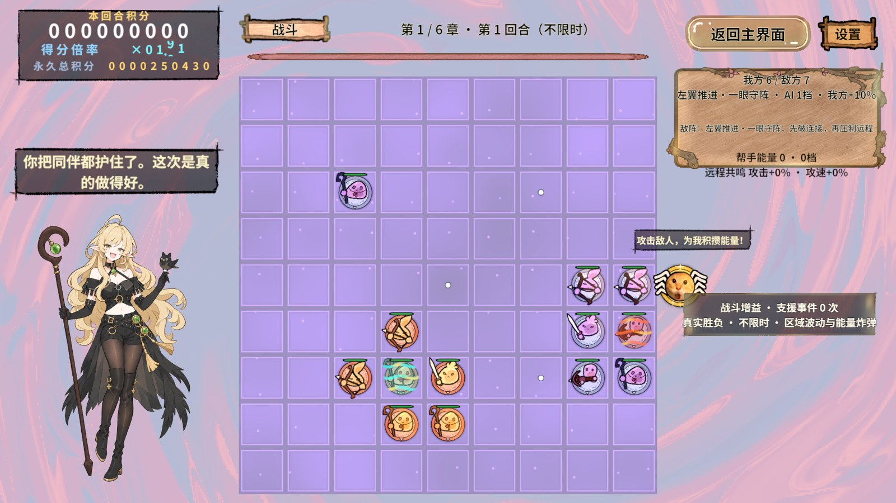
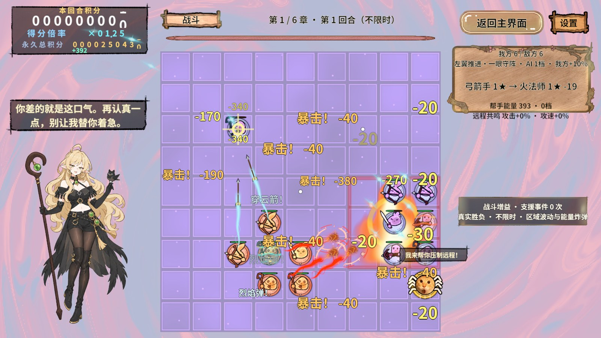
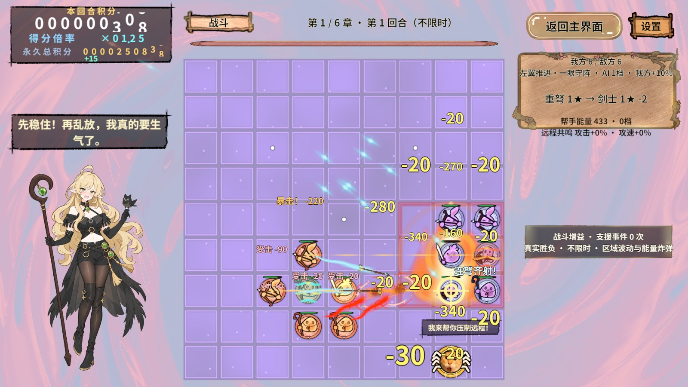
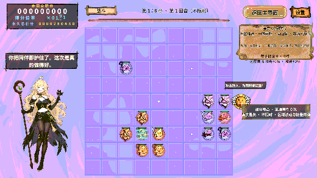

需求结果与测量
对话框改为根据实际立绘上沿定位，下沿距离Renderer上沿为屏幕高度1.17%（1920×1080时约12.6像素）；原画顶部少量透明留白之外，视觉上仅保留一小段头顶间距。对话框随人物位置排版，人物尺寸保持不变。此次下移后重新冷启动真实PC AB，三档表情12帧回归及finally再次全部通过。
六章战斗原立绘区域高0.39，人物占72%，原高度为屏幕28.08%；现区域高0.78，实测Renderer高度56.16%，比例正好2.00。删除候选区域缩小和进退场弹性缩放，只允许候选位置平移。空间不足时跳过，不再改变大小。
积分底板改用已有UI_Tip_imgBK的Sliced九宫格，字号与滚筒显示比例统一增大；保留真实滚筒和计分事件。中文字的竖向溢出设为Overflow，避免字号增大后整行标签因行高被裁掉。
| 评价档位 | 表情编号 | 实测高度 | 固定区域宽×高 | 显示断言 |
|---|---|---|---|---|
| 1 | 3 | 56.16% | 0.24 × 0.78 | 无遮挡、台词完整 |
| 2 | 2 | 56.16% | 0.24 × 0.78 | 无遮挡、台词完整 |
| 3 | 13 | 56.16% | 0.24 × 0.78 | 无遮挡、台词完整 |
实际执行与清理
rev_discover确认当前工程与运行期注册 → rev_call启用真实AB及内存隔离进度 → rev_run经大厅、选关进入第一章，等待IsTransitioning=false、81格与准备增益完成，经真实布阵/开始战斗入口开战。
使用yaya.evaluate-window输入三档表现事实，每次出现及四张截图之后检查Renderer高度；15次几何查询全部为0.5616，12帧实际截图。三次首次可画即为完整固定尺寸，台词完整，无遮挡。41个步骤与3个finally收尾步骤全部通过。
finally归还互动、返回大厅并等待过场完成；之后停止Play、解除隔离，恢复StartScene编辑状态。最终Unity Console错误查询为0；脚本编译与1745字字库检查通过。发布目录155个非meta文件与构建输出逐字节哈希一致。
真实画面



连续画面
12帧来自三次正式表现播放，观察立绘大小固定、表情切换与积分滚动。仅等比缩小报告图片，未裁剪或美化游戏内容。

发现的问题及修复
初版仍有候选区域缩小和弹性缩放，不能满足固定两倍要求；已移除。随后发现积分滚筒在RectMask2D之外的数字被误判为遮挡，已按实际裁剪矩形相交。删除缩放动画后同时移除旧的7%弹性外扩，避免积分跳字令立绘提前收回。
构建的字库输入校验曾拦截Prefab变更，已按项目工具重建清单；复制AB时出现meta写入冲突，已恢复原GUID并核对155个发布文件哈希一致。早期验证计划还有大厅未就绪和expect不支持动态引用的问题；修正等待与精确数值断言后重新完整执行，最终结果如上。
Revolution框架可行性与边界
复用RevUI面板、RevResManager与GameSpriteAtlasService图集引用、RevPool角色实例和RevRuntimeAutomation受控事实入口，既有资源/池/流程链能支撑本次界面修改及退出清理。修改只在项目表现、制作配方和场景参数，未改框架快照。
本次覆盖Editor真实PC AB冷启动与重新进入战斗；未覆盖独立Player、Android/手机、无尽画面及其它分辨率，不宣称设备性能或所有屏幕比例通过。原始JSON与PNG留在.codex/work/yaya-readability；无ZIP或Profiler录制。